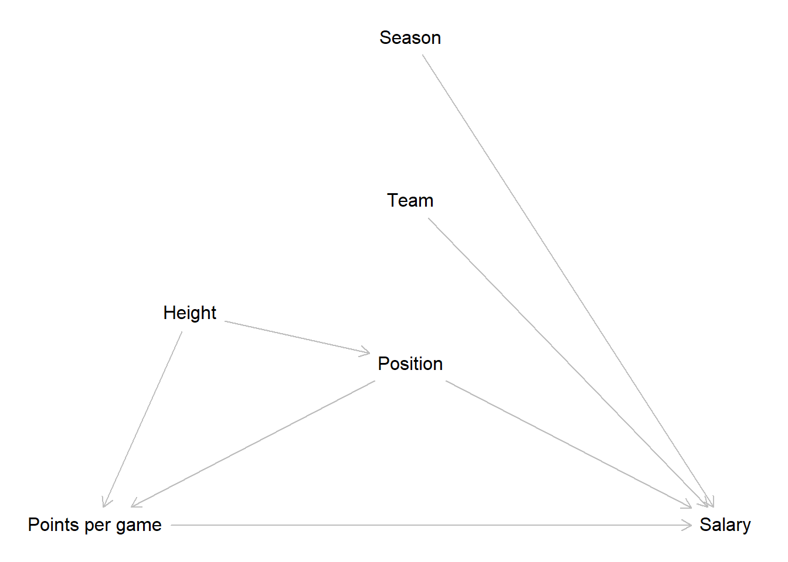
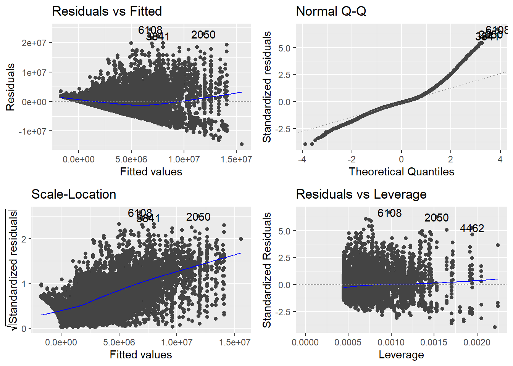
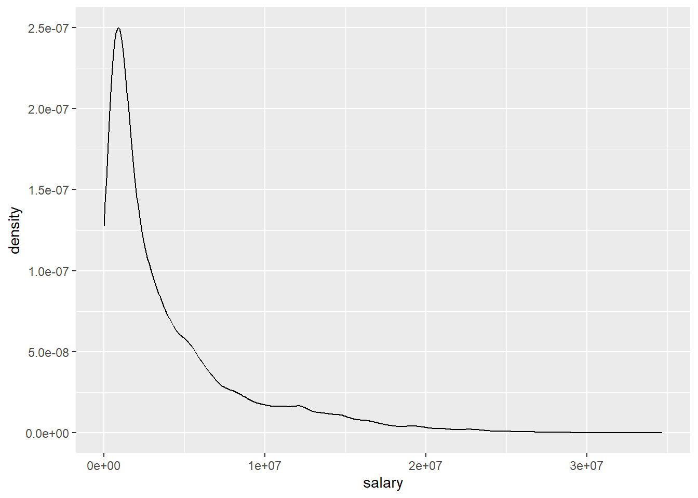
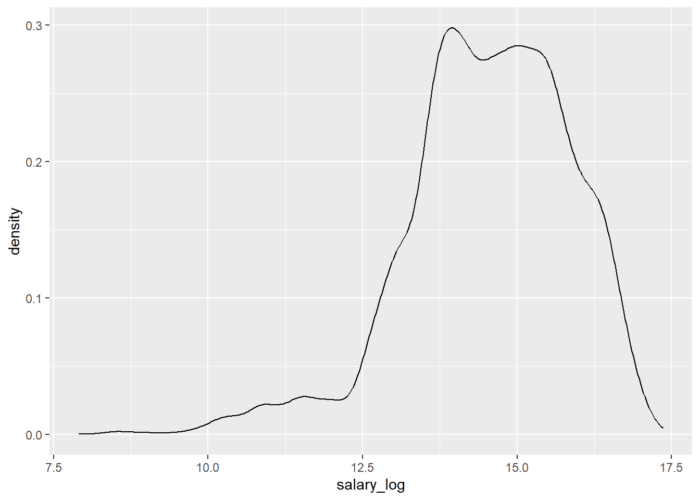
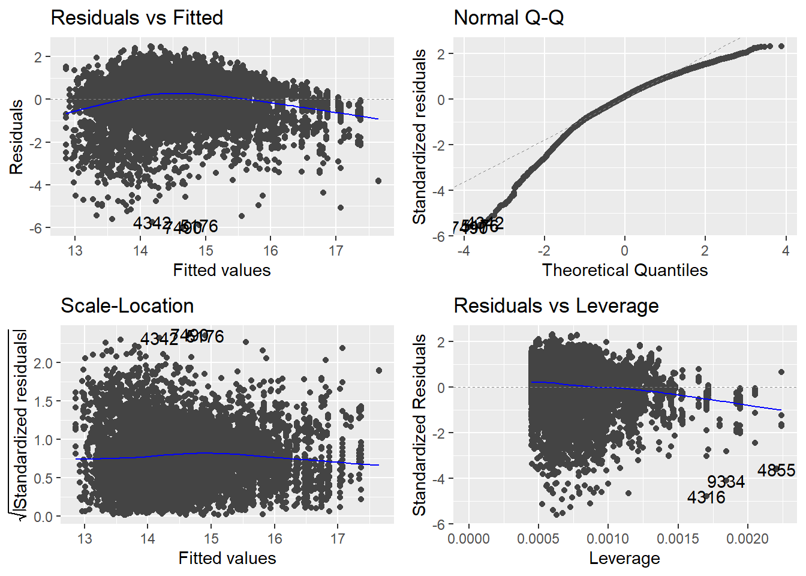
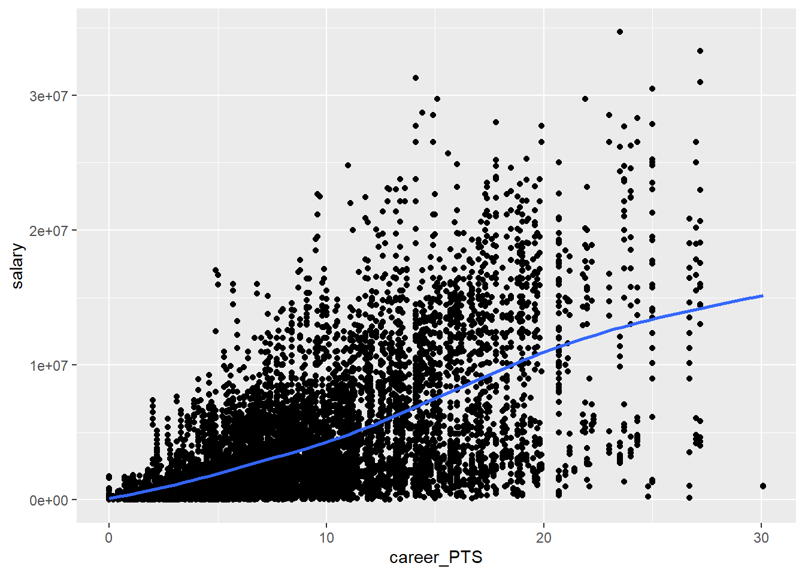
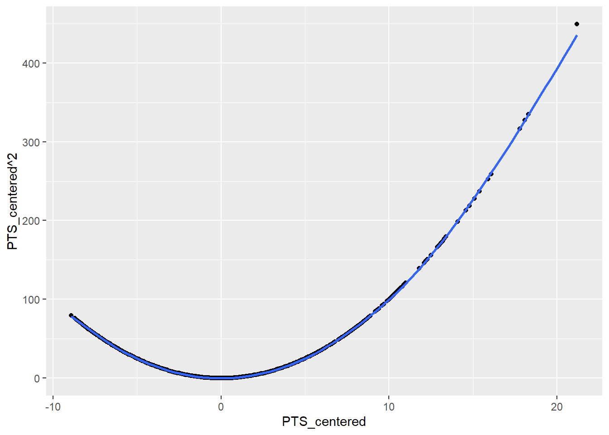
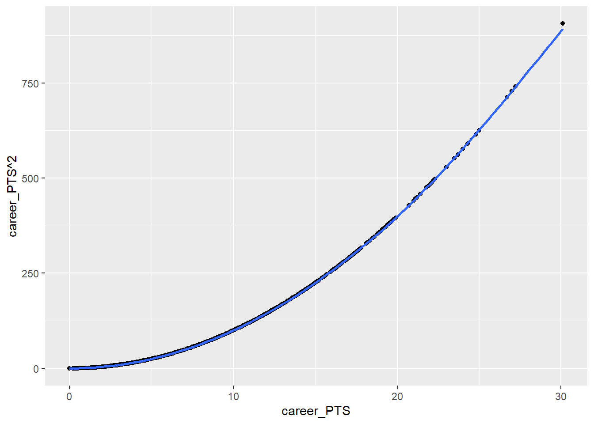
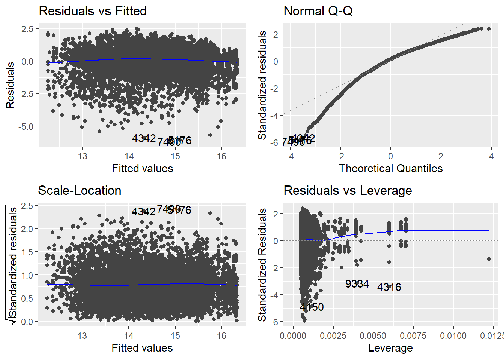

8 Linear Regression - Application
Still WIP!
After we have learned the ins and outs of linear regression we will now return to our NBA data. We already saw, that there was an interesting relationship between the points a player makes per game and the salary he receives in session 2. In session 4 we also built a DAG that reflects our assumptions about the data generating process. Based on the DAGs implications we can now build a linear regression model and try to estimate the effect of interest as accurately as possible.
8.1 Objectives
- Estimate the effect of interest, scored point on salary, using a linear regression
- Applying diagnostics to the model and correct mistakes
- Interpret the final model
8.2 R functions covered this week
lm(): This function is used to fit a linear model to the data. It takes a formula that specifies the dependent and independent variables, and a data frame that contains the variables. It returns a model object that can be used for further analysis.summary(): This function is used to get a summary of a model object, such as the coefficients, standard errors, t-values, p-values, R-squared, and F-statistic. It also provides information on the residuals, such as the minimum, maximum, median, and quartiles.tidy(): This function is from the broom package. It is used to convert a model object into a tidy tibble that contains one row per parameter estimate and columns for the term, estimate, standard error, statistic, and p-value.plot(): This function is used to create various plots for a model object, such as the residuals vs fitted values, the Q-Q plot, the scale-location plot, and the residuals vs leverage plot. These plots are useful for checking the assumptions of linear regression, such as linearity, normality, homoscedasticity, and outliers¹[1].autoplot(): This function is from the ggfortify package. It is used to create the same plots asplot()but in the style of ggplot2. It returns a list of four plots that can be customized further with ggplot2 functions.vif(): This function is from the car package. It is used to compute the variance inflation factors (VIF) for each independent variable in a linear model. The VIF measures how much the variance of a coefficient estimate is inflated due to multicollinearity. A high VIF indicates a potential problem of multicollinearity.log(): This function is used to compute the natural logarithm of a numeric vector. It can be used to transform a skewed dependent variable into a more normal distribution²[2].I(): This function is used to indicate that an expression should be evaluated as it is in a formula. It can be used to include non-linear transformations or interactions of independent variables in a linear model³[3].exp(): This function is used to compute the exponential function of a numeric vector. It can be used to reverse the logarithmic transformation of a dependent variable.ggplot(): It’s a key function from the ggplot2 package and is used to create a wide variety of static, dynamic, and interactive graphics in R. The function allows you to specify a mapping from data to aesthetics (color, shape, size) and geometric objects (points, lines, bars). It also allows you to add statistical transformations, coordinate systems, faceting, and themes.glance(): This function is from the broom package. It is used to get a summary of a model object, such as the R-squared, adjusted R-squared, RMSE, p-value, etc. It takes a model object and returns a tibble with one row per model and one column per statistic.
8.3 Research question
Picking up from session 2 & 4, our research question is still to get an unbiased estimate for the effect from points scored on the salary a NBA player receives. We already constructed a DAG that reflects our assumptions for the underlying data generating process. Let us revisit this briefly:

The implications of our DAG were that we only have to control for the position a player occupies to get an unbiased estimate for our effect of interest. The path that passes the body height is already closed by controlling for position and the team a player plays for as well as the season an observation was recorded in do not lie on an paths from our main independent to our dependent variable. Based on this we construct our model.
Now let us get to it and load the NBA data we prepared in week 2.
8.4 Simple linear regression in R
To conduct a multiple linear regression in R, we can use the built-in base R
function lm(), short for linear model.
The function is straightforward to use. As the first argument
we write the regression formula in R’s formula syntax.
We start building the formula by writing the name of our dependent_variable
followed by a tilde ~. You can read this as an \(=\) or as “regress the
dependent variable on”. After the tilde we add our first indepedent variable
by again writing out its name. If we have multiple independent variables in our
model - when we are running a multiple linear regression - we can add those by
writing a + followed by the name of the variable to be added.
As an additional argument, the function needs the name of the object that holds our data.
The goal of our research question is to estimate the effect of the points per
game on the received salary. So to regress salary on career_PTS, we just
write:
##
## Call:
## lm(formula = salary ~ career_PTS, data = data_nba)
##
## Coefficients:
## (Intercept) career_PTS
## -851914 552843This gives us a short output. The first line just echoes our code used to run the regression. We have seen this in the last session already, but now we know what the meaning was. After this we have a short block with the estimated coefficients. As we have run a simple linear regression, we only get the intercept and the coefficient for the sole independent variable used in the model. If we would have run a multiple linear regression, the result would basically look the same, only with more coefficients to display.
Before we dive into the results, we should talk about how to receive a more verbose output that does not hide all the other vital information that is associated with the model.
The easiest way is to use the base R function summary(). This is a generic R
function that returns different summaries, depending on the object it is used
on. We can for example use it on a data frame or tibble to get some descriptive
statistics for the included variables. For example, we can get information on the
distribution of points per game by writing:
## Min. 1st Qu. Median Mean 3rd Qu. Max.
## 0.000 5.100 8.000 8.908 12.000 30.100When we use summary() on a model object, like the one created by lm(), we
get a different output. Before we apply this we should save our model in an
object. This is good practice in most cases, as we can now apply all additional
analysis of the model on this object and we do not have to rerun the model
every time.
We can now apply summary() on the object m1, short for “model 1”:
##
## Call:
## lm(formula = salary ~ career_PTS, data = data_nba)
##
## Residuals:
## Min 1Q Median 3Q Max
## -14788659 -2023969 -434599 1311807 24326060
##
## Coefficients:
## Estimate Std. Error t value Pr(>|t|)
## (Intercept) -851915 76417 -11.15 <2e-16 ***
## career_PTS 552843 7453 74.17 <2e-16 ***
## ---
## Signif. codes: 0 '***' 0.001 '**' 0.01 '*' 0.05 '.' 0.1 ' ' 1
##
## Residual standard error: 3732000 on 9726 degrees of freedom
## Multiple R-squared: 0.3613, Adjusted R-squared: 0.3612
## F-statistic: 5502 on 1 and 9726 DF, p-value: < 2.2e-16This is the output we saw over the last weeks and it includes an extended and better readable coefficient block as well as the information on the residuals and the model fit.
An alternative method of displaying the coefficients in a regular tibble format
is to use tidy() from the broom package.
## # A tibble: 2 × 5
## term estimate std.error statistic p.value
## <chr> <dbl> <dbl> <dbl> <dbl>
## 1 (Intercept) -851914. 76417. -11.1 1.09e-28
## 2 career_PTS 552843. 7453. 74.2 08.4.1 Interpretation
While we know our model is not complete yet, let us still inspect the results.
For each point a player scores per game, his salary rises by about \(552,000\$\).
We see a clear positive and substantial effect. Let us also inspect the
intercept. This tells us that a player who makes no points per game has to pay
the team about \(850,000\). Wait, this does not make sense…
To make the intercept more readily interpretable we should again center our
metric dependent variable career_PTS on its mean.
## [1] 8.907679As we have now centered the independent variable of interest on its mean of \(8.9\) we can rerun the model.
##
## Call:
## lm(formula = salary ~ PTS_centered, data = data_nba)
##
## Residuals:
## Min 1Q Median 3Q Max
## -14788659 -2023969 -434599 1311807 24326060
##
## Coefficients:
## Estimate Std. Error t value Pr(>|t|)
## (Intercept) 4072633 37840 107.63 <2e-16 ***
## PTS_centered 552843 7453 74.17 <2e-16 ***
## ---
## Signif. codes: 0 '***' 0.001 '**' 0.01 '*' 0.05 '.' 0.1 ' ' 1
##
## Residual standard error: 3732000 on 9726 degrees of freedom
## Multiple R-squared: 0.3613, Adjusted R-squared: 0.3612
## F-statistic: 5502 on 1 and 9726 DF, p-value: < 2.2e-16The coefficient for points per game has not changed but its interpretation has. For each point per game over the mean of \(8.9\) points per game, the salary is estimated to increase by about \(552,000\$\). At the same time, for each point below the mean the salary is estimated to decrease by the same amount. The intercept now shows us the estimated salary of a player who scores \(8.9\) points per game, which is slightly upwards of \(4,000,000\$\). This makes way more sense.
This model model already achieved a considerable \(R^2\) of \(0.36\). About \(36\%\) of the variance in salaries is explained by points per game.
Another way to get the model statistics, such as \(r^2\), F-statistic, and p-value, is to use the glance() function from the broom package. This function returns a tibble with one row of model summaries.
## # A tibble: 1 × 12
## r.squared adj.r.squared sigma statistic p.value df logLik AIC BIC
## <dbl> <dbl> <dbl> <dbl> <dbl> <dbl> <dbl> <dbl> <dbl>
## 1 0.361 0.361 3732168. 5502. 0 1 -1.61e5 3.22e5 3.22e5
## # ℹ 3 more variables: deviance <dbl>, df.residual <int>, nobs <int>We can see that the output includes the same information as the summary of m1, but in a different format. The advantage of using glance() is that it is easier to manipulate and compare the model statistics using tidyverse functions. For example, we can use bind_rows() to combine the outputs of different models and compare their performance.
8.5 Multiple linear regression in R
The DAG we have constructed above based on our research question indicated that
we also have to include the position a player occupies in our model.
We can add additional independent variables to the formula used in lm() with a
+ and the name of the additional variable(s). This works the same way for all
types of variables, i.e. metric, dummies or categorical variables.
So let us do this now by adding the 5 dummies we constructed for the positions:
m2 <- lm(salary ~ PTS_centered + position_center + position_sf + position_pf + position_sg + position_pg, data = data_nba)
summary(m2)##
## Call:
## lm(formula = salary ~ PTS_centered + position_center + position_sf +
## position_pf + position_sg + position_pg, data = data_nba)
##
## Residuals:
## Min 1Q Median 3Q Max
## -14511723 -1950255 -372906 1358768 24433660
##
## Coefficients:
## Estimate Std. Error t value Pr(>|t|)
## (Intercept) 3679728 114300 32.193 < 2e-16 ***
## PTS_centered 568019 7474 75.994 < 2e-16 ***
## position_center 1380246 114539 12.050 < 2e-16 ***
## position_sf 125384 102174 1.227 0.219790
## position_pf 206505 94882 2.176 0.029547 *
## position_sg -331033 96841 -3.418 0.000633 ***
## position_pg -114552 117486 -0.975 0.329572
## ---
## Signif. codes: 0 '***' 0.001 '**' 0.01 '*' 0.05 '.' 0.1 ' ' 1
##
## Residual standard error: 3652000 on 9721 degrees of freedom
## Multiple R-squared: 0.3888, Adjusted R-squared: 0.3884
## F-statistic: 1031 on 6 and 9721 DF, p-value: < 2.2e-168.5.1 Interpretation
We still see a clear positive effect of points per game on the received salary after controlling for the position a player occupies. Among those centers are by far the top earners, making about \(1,400,00\$\) more than players on other positions. Most other positions show relatively small effects on the earnings. Power and small forwards earn somewhat more than other positions on average while point and especially shooting guards earn less.
We can now compare two fictive cases of a center and a point guard who each make about \(20\) points per game. What is the estimated salary for them?
As we have extensively worked with the formulas over the last sessions, we can now keep it short and calculate the estimate directly. Remember that we centered the points per game on the mean of about \(8.9\), so making \(20\) per game would mean scoring about \(11.1\) more compared to the average player. We will keep it simple here and calculate with \(11\).
\[\hat{y_{center\_20}} = 3679728 + 568019 * 11 + 1380246 = 11,308,183\]
\[\hat{y_{pg\_20}} = 3679728 + 568019 * 11 - 114552 = 9,813,385\]
Despite making the same amount of points per game for their team, the model estimates that a point guard earns about \(1,500,000\$\) less compared to a center.
8.5.2 Sidenote: Adding interactions
We will not use interactions in this session but we briefly want to state how we could add them in the formula syntax.
Remember that interactions are multiplicative terms in our regression formula.
Adding them to the R formula syntax works the same way. We add the new term with
a + and use a * between the two variables that we want to interact.
Here is a non running toy example where we interact two x-variables:
lm(y ~ x1 + x2 + x1 * x2, data = some_data)8.6 Regression Diagnostics
So how does our model perform? Did we meet all the regression assumptions that were introduced last week?
To access the visual tests we used last session, we can just use the base R
function plot(), applied to the model object. If we write plot(m2), the
console asks us to press ENTER to go through each plot one by one. We can also
add a number as a second argument, specifying which plot we want to see. For
example, plot(m2, 1) gives us the residuals vs. fitted plot.
But there is an easier way to see all four plots at once. The package
ggfortify expands the functionalities of ggplot2 so that we can use it’s
autoplot() function to automatically plot all four visual tests of interest.
An added benefit, depending on your taste, is that the plots are rendered in the
style of ggplot2.

The residuals vs. fitted does not show us a more or less straight line but starts mildly positive, then dips below \(0\) and rises again for higher estimated salaries. This could indicate at least two thing. Either we have missed an important independent variable, like in the last session, or we are actually dealing with some amount on non-linearity. If it is non-linearity, it is still mild non-linearity, but maybe we should still inspect this.
The Q-Q plot this time shows that the actual residuals are far from being distributed normally. While we can never expect a perfectly normal distribution, here the deviations are striking, especially for high residuals.
The scale-location plot is used to address the assumption of homoscedasticity. What we want to see, is a straight line with data points equally distributed around it. This clearly is not the case here. As it is, the plot indicates that we may be able to estimate small salaries reasonably well but that the higher the estimate, the more unreliable our model gets.
The residuals vs. leverage plot also indicates some problems. There are some observations that have larger or smaller standardized residuals compared to the thresholds of \(3\) and \(-3\). The threshold for leverage is computed as \(2 * (6 + 1) / 9728 = 0.001439145\). We also see some observations with higher values. While both are rules of thumb and may not necessarily point to severe problems by themselves, things can get problematic when there are observations that do not meet the thresholds for both measures at the same time. This is indicated by clusters in the lower or upper right corners. This time we can observe this in the lower right.
We should also test for multicollinearity. We can compute the VIF measures using
a function from the package car.
## PTS_centered position_center position_sf position_pf position_sg
## 1.050400 2.035722 1.686736 1.512765 1.565004
## position_pg
## 1.916933The values for any variable should not exceed \(5\) and should be closer to \(1\). Our value for points shows no signs of multicollinearity. The values for the position dummies have somewhat higher values, which makes sense. While there are some players that play multiple positions, for most a value of \(1\) on one position predicts the other positions as having a value of \(0\). But as we are still far away from the threshold of \(5\), there is no need for concern here.
Overall, we have problems! While we do not see signs of problematic multicollinearity, all other tests indicated clear and in parts severe problems. We have to put in some more work before we can be confident that our model accurately estimates the effect of points per game on the received salary.
Before we start addressing the problems, we should note that the four plots are highly interactive. It is entirely possible that solving one of the problems also solves the others or, for added fun, even generates new ones. This means that we should refrain from turning too many dials at once and rather change the model one step at a time, see if it improves things and then address remaining problems in the same way.
8.6.1 Skewed outcome variable
The deviation from normality and the clearly present heteroscedasticity could both point to the same problem, namely a skewed dependent variable. Let us examine its distribution first.

Our outcome variable is not only skewed, it is highly skewed. While there are many salaries in the “lower” six to seven digits regions, we also see some extremely high wages up to about \(35,000,000\$\). The higher the salary the fewer observations we have. That is why we see such a long flat tail to the right.
This distribution actually is relatively common for income data. In most surveys of the general population we have many people receiving relatively low incomes while fewer individuals receive higher or extremely high incomes. It is still interesting that this also holds true for a population of high earners such as NBA players. Inequality is relative. Compared to the general population almost all our players would be somewhere in the long tail to the right. Compared to their own population we still see highly substantial differences in outcomes.
We can transform the dependent variable to a different scale to get a less
skewed distribution. A common transformation for income data is to take the
logarithmus naturalis of the actual value and then use this as our
dependent variable. To achieve the transformation we can simply use the base R
function log() which as its default computes the \(ln\).
data_nba <- data_nba %>%
mutate(salary_log = log(salary))
data_nba %>%
ggplot(aes(x = salary_log)) +
geom_density()
While the distribution of the transformed variable also is somewhat skewed, now to the left, overall it is much more evenly distributed.
We should use the new variable as our outcome an check the tests again.
m3 <- lm(salary_log ~ PTS_centered + position_center + position_sf + position_pf + position_sg + position_pg, data = data_nba)
autoplot(m3)
Looking at the scale-location plot first, we can now see a straight line with our residuals fairly evenly distributed around it. Thus we now longer see any signs of heteroscedasticity. The Q-Q plot now also indicates a somewhat more normal distribution of our residuals but there are substantial deviations still. While high residuals now appear to more or less follow the normal distribution, small residuals now deviate stronger than they have before. This reflects the transformation and its distribution, which now has long tail on the left instead of on the right, as before. Turning to the residuals vs. leverage plot we still see some observations that do not meet the respective thresholds. At the same time, there appear to be less that simultaneously have high absolute standardized residuals and high leverage. The residuals vs. fitted plot now also shows a more even distribution while the signs on non-linearity remain. We do not have to recompute the VIF measure as we did not change any independent variables in the model.
8.6.2 Non-linearity
Let us now address the non-linearity that is still indicated in the first plot. We can approach non-linear relationships in our inherently linear model by adding non-linear transformations of a dependent variable to the model. But before we start squaring random variables, we should think about what could be non-linear in our case. We can rule out our dummy variables for position. This leaves the points scored. The model already indicates that our suspicion that salary rises with the points scored could be true. But maybe this relationship is not linear over its whole range. If you already are among high scorers, scoring one or two points more than your peers may not be such a substantial difference and thus may not have the same strong effect on salary.
We should first inspect the relationship between both variables again. This time
we add a LOWESS curve to the plot. This is often helpful in detecting
non-linearity as the curve can change its slope over the range of the dependent
variable. This is also the default for geom_smooth().

While this is not as clear as we hoped, the line may still indicate some mild non-linearity as it flattens somewhat for really high point values. Also we have to keep in mind that the non-linearity may be stronger when we control for additional variables, as our position dummies.
One common way to address the non-linearity is taking the square of the dependent variable in question. We should not square our centered points variable though. Let us inspect what would happen if we squared it.
data_nba %>%
ggplot(aes(x = PTS_centered, y = PTS_centered ^ 2)) +
geom_point() +
geom_smooth(se = FALSE)
As the square of negative values is positive, we would basically introduce the assumption into the model that there is non-linearity for low and high scorers and that the effect will be in the same direction. While our assumption is that there are diminishing returns between being a high scorer and a really high scorer, we do not assume that making more points if you are among the lower scorers should have the same effect. If at all, in these regions additional points could have an even larger effect.
Because of this we should return to the uncentred version of our variable. What happens if we square this?
data_nba %>%
ggplot(aes(x = career_PTS, y = career_PTS ^ 2)) +
geom_point() +
geom_smooth(se = FALSE)
This is what we wanted, a transformation that expects a stronger difference the higher the score value is. For the final model we will thus work with the uncentered variable. We included the centered version because it is more straightforward to interpret. This is not really a concern anymore because dreams of easy interpretability have long passed after transforming two variables.
We could again transform the variable in our data and thus add a second version,
but we can also do so directly in the formula syntax. When we use the function
I() we tell R to interpret anything within the parentheses as a mathematical
expression. This is what we will do below. Note that we add the point variable
as its untransformed and transformed versions. The first represents the linear
parts and the second the non-linear parts of the effect.
m4 <- lm(salary_log ~ career_PTS + I(career_PTS^2) + position_center + position_sf + position_pf + position_sg + position_pg, data = data_nba)We can now reassess the tests for the last model.

The line in the residuals vs. fitted plot got more straight. It seems that we
actually captured the mild non-linearity that was present before by adding the
squared points value to our model. The scale-location plot also still indicates
no more problems of heteroscedasticity. Contrary, the data points now are even
more evenly distributed compared to m3. The Q-Q plot has not substantially changed,
still showing non-normally distributed residuals. We can not really fix this
now, but we also learned that this test is less consequential if we have a
large \(n\). Turning to the residuals vs. leverage plot, we still see several points
that do not meet the thresholds but at the same time we do not see any points
with high values for both. Overall there seem to be no overly influential points
which we had to address. Let us also reexamine the VIF.
## career_PTS I(career_PTS^2) position_center position_sf position_pf
## 12.135096 11.883255 2.040563 1.709312 1.520284
## position_sg position_pg
## 1.569463 1.949078We now see high VIF values for both versions of our point variable, which is the
only substantial change. Did we introduce a
new problem? If we take the measure at face value, yes. But if we think about
it, no. All this means is that both versions of our variable are highly
correlated. Of course they are. One is computed from the other. We can
perfectly predict the value of career_PTS^2 from career_PTS. There is
collinearity by design. If we want to assess multicollinearity we should apply
the function to m3. If we would have used interactions, the situation would be
similar. This is just a small reminder that all our tests do not work without
thinking about what we are actually doing.
8.7 Returning to our research question
As we now settled on m4 as our best model, it is time to discuss what we
actually found out about the effect of scored points on the received salary.
##
## Call:
## lm(formula = salary_log ~ career_PTS + I(career_PTS^2) + position_center +
## position_sf + position_pf + position_sg + position_pg, data = data_nba)
##
## Residuals:
## Min 1Q Median 3Q Max
## -6.1886 -0.5744 0.1583 0.7318 2.4876
##
## Coefficients:
## Estimate Std. Error t value Pr(>|t|)
## (Intercept) 12.2544680 0.0428953 285.684 < 2e-16 ***
## career_PTS 0.3124511 0.0072287 43.224 < 2e-16 ***
## I(career_PTS^2) -0.0071879 0.0003113 -23.092 < 2e-16 ***
## position_center 0.5482072 0.0326289 16.801 < 2e-16 ***
## position_sf 0.1067444 0.0292656 3.647 0.000266 ***
## position_pf 0.1214253 0.0270641 4.487 7.32e-06 ***
## position_sg -0.0025577 0.0275935 -0.093 0.926150
## position_pg 0.0312286 0.0337077 0.926 0.354234
## ---
## Signif. codes: 0 '***' 0.001 '**' 0.01 '*' 0.05 '.' 0.1 ' ' 1
##
## Residual standard error: 1.039 on 9720 degrees of freedom
## Multiple R-squared: 0.3978, Adjusted R-squared: 0.3973
## F-statistic: 917.1 on 7 and 9720 DF, p-value: < 2.2e-16The more points a player scores, the higher the salary is estimated. At the same time we have identified a non-linear aspect to this relationship. The non-linear effect is small but negative. This indicates diminishing returns for high scorers. The higher the score, the less positive the effect of additional points is.
The problem after two transformations of involved variables is, that interpretation has lost all its intuitiveness. The effects now describe the change in logarithmised salaries. While we can still easily assess if an effect is positive or negative we do not really know what the magnitude of an effect is. For this we have to reverse the transformation.
Let us revisit our example of a center and a point guard making \(20\) points per game from above. Note that we also have to take the square of points for the non-linear term.
\[\hat{y_{center\_20}} = 12.2544680 + 0.3124511 * 20 - 0.0071879 * 20^2 + 0.5482072 \\ = 16.17654\]
\[\hat{y_{pg\_20}} = 12.2544680 + 0.3124511 * 20 - 0.0071879 * 20^2 + 0.0312286 \\ = 15.659565\]
To find out what this means in hard dollars, we have to reverse the logarithmus
naturalis. We can do this by calculating \(e^{\hat{y}}\). R gives us the function
exp() to do just that.
## [1] 10601860## [1] 6322119For our center who scored \(20\) points we thus estimate a salary of \(10,601,860\$\), for a point guard with the same amounts of points \(6,322,119\$\). These estimates are not only lower than the ones derived above, the difference between the positions is also more pronounced. For a point guard, scoring additional hoops does not have the same payoff compared to a center. While the latter receive a higher pay in general they also receive more per additional point scored.
As the name suggests and as we have seen in our exploratory data analysis, point guards make a lot of points. At the same time they earn considerable less. Above we see an estimated difference of over \(4,000,000\$\) between high scoring centers and point guards. The question remains why this is the case. Maybe there are some additional variables we had to consider to fully unravel this. For example it is reasonable to expect some effects on salary that are not connected to the performance in terms of scoring. Both positions fill different roles in basketball game. Centers, besides scoring, have to get rebounds and facilitate turnarounds. Point guards on the other hand have the role to build opportunities for their team and pass to other players. Both measures of performance were not considered in our model but are highly valuable to any team. Also there is something we can call “starfactor” or “flashiness”. A center is much more visible in the game, takes big jumps and dunks. Maybe a center is not only more valuable in terms of performance but also in being an attracting force for fans. This could change the relationship between points and salary for players with a high “starpower”. Such a variable would be hard to measure, but could maybe solve the parts of the puzzle that still remain.
8.8 Moving on
But there is another possibility. We built the best model based on our DAG, but maybe the DAG is not entirely correct. Maybe we made some faulty assumptions or maybe we missed a variable with an important role in the data generating process. In the session 10 we will see, how we can come up with a different DAG that incorporates the same variables but makes some different assumptions.